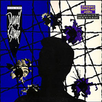
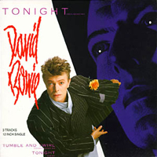
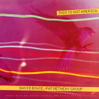
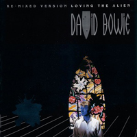

1984 - TONIGHT
High-concept art duo Gilbert & George (Gilbert Prousch and George Passmore) inspired the Tonight artwork, resulting in one of the most memorable David Bowie album covers of the '80s. The duo's best-known work, a long-running series known as The Pictures, consisted of hand-painted photos, backlit and overlaid with grids. Recalling stained-class windows, they provided eye-catching inspiration for a brightly-coloured, flower-strewn album cover released at the height of the New Romantic era.
Designer: Mick Haggerty
LOVING THE ALIEN Watching them come and go The Templars and the Saracens They're travelling the holy land Opening telegrams Torture comes and torture goes Knights who'd give you anything They bear the cross of Coeur de Leon Salvation for the mirror blind But if you pray All your sins are hooked upon the sky Pray and the heathen lie will disappear Prayers they hide the saddest view (Believing the strangest things, loving the alien) And your prayers, they break the sky in two (Believing the strangest things, loving the alien) Thinking of a different time Palestine a modern problem Bounty and your wealth in land Terror in a best laid plan Watching them come and go Tomorrows and the yesterdays Christians and the unbelievers Hanging by the cross and nail But if you pray All your sins are hooked upon the sky Pray and the heathen lie will disappear Prayers they hide the saddest view (Believing the strangest things, loving the alien) And your prayers, they break the sky in two (Believing the strangest things, loving the alien) You pray 'til the break of dawn (Believing the strangest things, loving the alien) And you'll believe you're loving the alien (Believing the strangest things, loving the alien) (Believing the strangest things, loving the alien) DON'T LOOK DOWN Don't look down They're making sort of crazy sounds Don't look down, no Don't know who else came to kneel On this empty battlefield But when I hear that crazy sound, I don't look down From Central Park to shanty town I always hear that crazy sound From New York to shanty town There's always something else Don't look down, no I went this morning to the cemetery To see old Rudy Valentino buried Lipstick traces on his name But when I hear that crazy sound, I don't look down From Central Park to shanty town I always hear that crazy sound From New York to shanty town There's always something else Don't look down, no When I see you standing there I can't see the clothes you wear But when I hear that crazy sound, I don't look down From Central Park to shanty town I always hear that crazy sound From New York to shanty town There's always something else Don't look down, no No I won't be bored I won't be there Look at life it's no piece of cake But when I hear that crazy sound, I don't look down From Central Park to shanty town I always hear that crazy sound From New York to shanty town There's always something else Don't look down, no GOD ONLY KNOWS If you should ever leave me My life would still go on believe me The world could show nothing to me So what good would living do me God only knows what I'd be without you I may not always love you But as long as there are stars above you You'll never need to doubt it I'll make you so sure about it God only knows what I'd be without you TONIGHT I saw my baby She was turning blue I knew that soon Her young life was through And so I got down on my knees Down by her bed And these are the words To her I said Everything will be alright tonight Everyone will be alright tonight No one moves No one talks No one thinks No one walks tonight Tonight Everything will be alright tonight Everything will be alright tonight No one moves No one talks No one thinks No one walks tonight Tonight I am going to love you until the end I will love you until I reach the end I will love you until I die I will see you in the sky Tonight NEIGHBORHOOD THREAT Down where your paint is cracking Look down your backstairs buddy Somebody's living there and He don't really feel the weather And he don't share your pleasures No he don't share your pleasures Look at his eyes Did you see his crazy eyes You're so surprised he don't run to catch your ash Everybody always wants to kiss your trash You can't help him Nobody can Now that he knows There's nothing to get Will you still place your bet On the neighborhood threat Somewhere a baby's bleeding Somewhere a mother's needing Outside a boy is lying But mostly he is crying And he just shouts in anger You'll find him interesting Look at his eyes Did you see his crazy eyes You're so surprised he doesn't build for you Everybody always wants to run with you BLUE JEAN Blue Jean, I just met me a girl named Blue Jean Blue Jean, she got a camouflaged face and no money Remember they always let you down when you need 'em Oh, Blue Jean, is heaven any sweeter than Blue Jean She got a police bike She got a turned up nose Sometimes I feel like (Oh, the whole human race) Jazzing for Blue Jean (Oh, and when my Blue Jean's blue) Blue Jean can send me (Oh, somebody send me) Somebody send me (Oh, somebody send me) One day I'm gonna write a poem in a letter One day I'm gonna get that faculty together Remember like everybody has to wait in line Oh, Blue Jean, look out world, oh you know I've got mine She got Latin roots She got everything Sometimes I feel like (Oh, the whole human race) Jazzing for Blue Jean (Oh, and when my Blue Jean's blue) Blue Jean can tempt me (Oh, somebody send me) Somebody sent me (Oh, somebody send me) TUMBLE AND TWIRL I've seen the city I took the next flight For Borneo They say it's pretty I like the tee shirts In Borneo Some wear Bob Marley Others in Playboy Or Duvalier Make the last plane come Let me rise through the cloudy above With a book on Borneo Strangers come and go It's such a waste of time Problems far behind Another day But even in springtime It's a rich slice of life So send me a letter (We'll meet in Borneo) I'll reply with a broken spear (We are mulatto) That dusky mulatto (We'll meet in Borneo) In nylons and tattoos (I like the free world) Hot juice in coke bottles (We'll meet in Borneo) We dance in the sand (We are mulatto) Well, they twirl and they tumble (Tumble and twirl) Yes, they twirl and they tumble (Tumble and twirl) Well, I'll twirl and I'll tumble (Tumble and twirl) I've been to Leon's He's got nine daughters And a stereo (Stereo) They say that Leon Watches from the tree tops In Borneo (Borneo) When the road is mud Everything stops with a thud That's the way it goes Way down yonder in Borneo Far beneath his mansion There's an open drain Sending all the sewage down the hill But when the general shows movies No one hesitates To sneak from the jungle (We'll meet in Borneo) They laugh and they mumble (We are mulatto) Enjoying the show (We'll meet in Borneo) And that dusky mulatto (I like the free world) Hot juice in coke bottles (We'll meet in Borneo) In blue jeans and tattoos (We are mulatto) Well, they twirl and they tumble (Tumble and twirl) Yes, they twirl and they tumble (Tumble and twirl) Well, I'll twirl and I'll tumble (Tumble and twirl) I like the free world (I like the free word) They say it's pretty (Tumble and twirl) This time of year (I like the free word) They tumble and twirl (Tumble and twirl) I'll tumble and twirl I KEEP FORGETTING I keep forgetting you don't love me no more I keep forgetting you don't want me no more I keep forgetting that you told me that you Didn't want me around any more But these stupid old feet Just head for your street Like they've done so many times before And this stubborn old fist On the end of my wrist Keeps a knocking on your front door I keep forgetting you don't love me no more I keep forgetting you don't want me no more I keep forgetting about those heartbreaking nights And those heartbreaking things That you said Though I know in my heart We're drifting apart I can't believe that our love is dead Though it's plain as can be That you're finished with me I just can't get it through my head I keep forgetting you don't love me no more I keep forgetting you don't want me no more Though I know in my heart We're drifting apart I can't believe that our love is dead Though it's plain as can be That you're finished with me I just can't get it through my head I keep forgetting you don't love me no more I keep forgetting you don't want me no more I keep forgetting you don't love me no more I keep forgetting you don't want me no more DANCING WITH THE BIG BOYS Something's going on in society (Dancing with the big boys) You chew your fingers And stare at the floor (Dancing with the big boys) One wrong word And you're out of sync Talking 'bout a hands on policy (Big boys) Death to the trees (Dancing with the big boys) They weren't bad They weren't brave Nothing is embarrassing (Dancing with the big boys) There are too many people Too much belief (Dancing with the big boys) Where there's Trouble there's poetry (Dancing with the big boys) Your family is a football team (Big boys) This dot marks your location (Dancing with the big boys) Loneliness in a free society (Dancing with the big boys) (Big boys) This can be embarrassing (Big boys) Dancing with the big boys (Dancing with the big boys) La-la-la, la-la-la (Big boys) THIS IS NOT AMERICA This is not America, sha la la la la A little piece of you The little peace in me Will die (This is not a miracle) For this is not America Blossom fails to bloom this season Promise not to stare Too long (This is not America) For this is not the miracle There was a time A storm that blew so pure For this could be the biggest sky And I could have the faintest idea For this is not America Sha la la la la This is not America, no This is not, sha la la la la Snowman melting from the inside Falcon spirals to the ground (This could be the biggest sky) So bloody red, tomorrow's clouds A little piece of you The little piece in me Will die (This could be a miracle) For this is not America There was a time A wind that blew so young For this could be the biggest sky And I could have the faintest idea For this is not America Sha la la la la This is not America, no This is not, sha la la la This is not America, no This is not This is not America, no This is not, sha la la la
SINGLES



